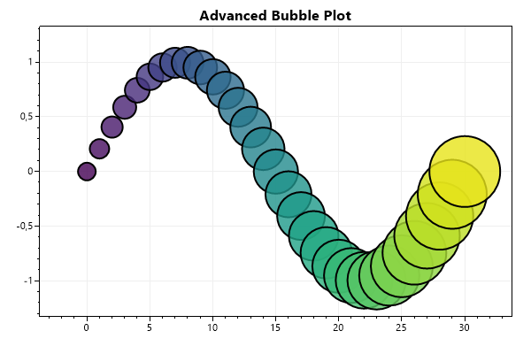
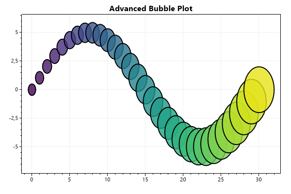
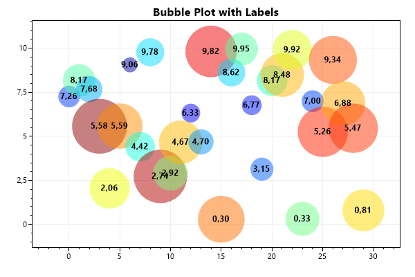

This page contains recipes for the Bubble Plot category.
Visit the Cookbook Home Page to view all cookbook recipes.
Visit the Cookbook Home Page to view all cookbook recipes.
Bubble Plot
Bubble plots display circles at specific X/Y locations. Each circle can be individually customized. Save the object that is returned when the bubble plot is created and call its Add() method to add bubbles.
var plt = new ScottPlot.Plot(600, 400);
double[] xs = DataGen.Consecutive(31);
double[] ys = DataGen.Sin(31);
var colormap = Drawing.Colormap.Viridis;
var myBubblePlot = plt.AddBubblePlot();
for (int i = 0; i < xs.Length; i++)
{
double fraction = (double)i / xs.Length;
myBubblePlot.Add(
x: xs[i],
y: ys[i],
radius: 10 + i,
fillColor: colormap.GetColor(fraction, alpha: .8),
edgeColor: System.Drawing.Color.Black,
edgeWidth: 2
);
}
plt.Title("Advanced Bubble Plot");
plt.AxisAuto(.2, .25); // zoom out to accommodate large bubbles
plt.SaveFig("bubble_quickstart.png");

Bubble Size
The size of bubbles are defined in pixel units by default. However, it is possible to define the size of bubbles using the same units the coordinate system and axes use. If using axis units, users may want to enable the axis scale lock feature to enforce bubble circularity.
var plt = new ScottPlot.Plot(600, 400);
double[] xs = DataGen.Consecutive(31);
double[] ys = DataGen.Sin(31, mult: 5);
var colormap = Drawing.Colormap.Viridis;
var myBubblePlot = plt.AddBubblePlot();
for (int i = 0; i < xs.Length; i++)
{
double fraction = (double)i / xs.Length;
myBubblePlot.Add(
x: xs[i],
y: ys[i],
radius: .5 + i * .05f,
fillColor: colormap.GetColor(fraction, alpha: .8),
edgeColor: System.Drawing.Color.Black,
edgeWidth: 2
);
}
// indicate radius is coordinate units
myBubblePlot.RadiusIsPixels = false;
// Enable the axis scale lock to force bubbles to be circular:
//plt.AxisScaleLock(true, EqualScaleMode.PreserveLargest);
plt.Title("Advanced Bubble Plot");
plt.SaveFig("bubble_size.png");

Bubbles with Labels
Bubble plots can be combined with other plot types to create more advanced charts. In this example each bubble is accompanied by a text object. Bubbles are also colored according to their size such that smaller bubbles are bluer.
var plt = new ScottPlot.Plot(600, 400);
Random rand = new(0);
int pointCount = 30;
double[] xs = DataGen.Consecutive(pointCount);
double[] ys = DataGen.Random(rand, pointCount, 10);
string[] labels = ys.Select(x => x.ToString("N2")).ToArray();
var labelFont = new Drawing.Font
{
Bold = true,
Color = Color.Black,
Alignment = Alignment.MiddleCenter
};
var myBubblePlot = plt.AddBubblePlot();
for (int i = 0; i < xs.Length; i++)
{
// give each bubble a random size and make smaller ones bluer
double randomValue = rand.NextDouble();
double bubbleSize = randomValue * 30 + 10;
Color bubbleColor = Drawing.Colormap.Jet.GetColor(randomValue, .5);
myBubblePlot.Add(
x: xs[i],
y: ys[i],
radius: bubbleSize,
fillColor: bubbleColor,
edgeColor: Color.Transparent,
edgeWidth: 1
);
plt.AddText(labels[i], xs[i], ys[i], labelFont);
}
plt.Title("Bubble Plot with Labels");
plt.AxisAuto(.2, .25); // zoom out to accommodate large bubbles
plt.SaveFig("bubble_withText.png");
